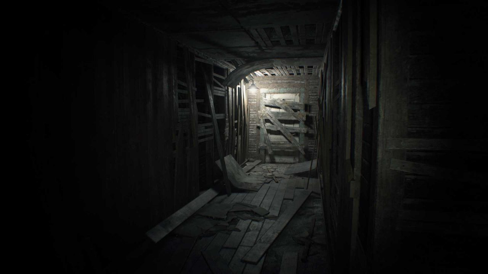

Sigues el pequeño pasillo

Sigues avanzando en el pasillo estrecho, encuentras un final sellado con tablas. Con esfuerzo las
quitas
y encuentras un pasillo más grande con una luz brillante hasta el final, parece que
es una
salida. Escuchas atras que alguien te viene siguiendo...